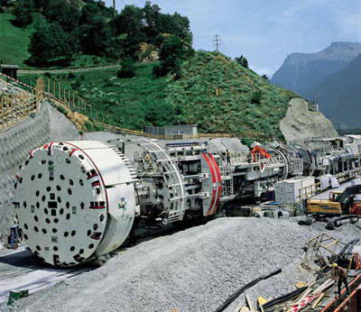

Baustellen unter Tage, wie Tunnel-, Kavernen-, Hohlraumbaustellen u. ä. im Folgenden als Tunnelbaustellen bezeichnet, unterscheiden sich in vielfacher Hinsicht von oberirdischen Baustellen. Das betrifft nicht nur die schwierigen Umgebungsbedingungen, sondern auch die hohen Leistungsanforderungen. Die eingesetzten Maschinen, Geräte und Einrichtungen werden dabei in extremer Weise beansprucht.
Bei Auswahl, Installation und Betrieb von elektrischen Anlagen und Betriebsmitteln an Tunnelbaustellen ist darauf besonders zu achten, auch um zusätzliche Gefährdungen zu vermeiden, die sich ergeben können, z.B. durch Auftreten von Feinstaub in großen Mengen, Vorhandensein von Feuchtigkeit, Möglichkeit eines Wassereinbruchs, Auftreten von explosiblen Gasgemischen, Brandgefahren, engen Platzverhältnissen, Fahrverkehr, Steinschlag und Hereinbrechen von Massen. Elektrische Anlagen und Betriebsmittel an Tunnelbaustellen müssen wesentlich höheren Anforderungen genügen als an Baustellen über Tage.